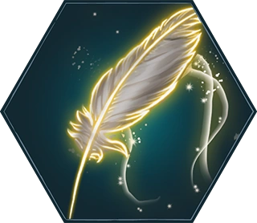
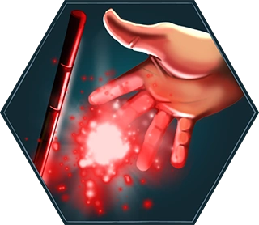
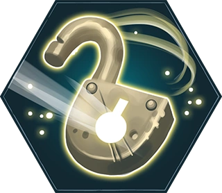
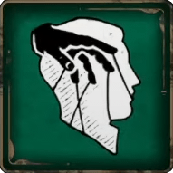
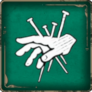

HECHIZOS Y MALDICIONES
En el Libro de los Hechizos podremos encontrar una gran cantidad y variedad de hechizos o encantamientos que sirven para realizar muchas cosas. Por otro lado, dentro de las Artes Oscuras podremos encontrar las tres Maldiciones Imperdonables.
WINGARDIUM LEVIOSA
Con el encantamiento, una bruja o un mago puede hacer que las cosas vuelen al agitar la varita. El encantamiento es una gran forma de probar tu habilidad mágica, tu control de la varita y, sobre todo, tu paciencia.
EXPELLIUARMUS
Es un encantamiento que fuerza al oponente a soltar lo que sea que esté sujetando. Era común ver este hechizo usado en duelos para hacer que un oponente perdiera su varita.
ALOHOMORA
Es un encantamiento que permite abrir objetos como puertas y ventanas. También conocido como "El amigo del ladrón"
IMPERIO
Es uno de los hechizos más poderosos y siniestros conocidos del mundo mágico. Cuando se lanza correctamente, la maldición pone a la víctima completamente bajo el control del usuario, aunque una persona con una fuerza de voluntad excepcional es capaz de resistir sus efectos.
CRUCIO
Es otro de los hechizos más poderosos y siniestros conocidos del mundo mágico. Cuando se lanza correctamente, la maldición genera un dolor intenso y agónico en la víctima.
AVADA KEDAVRA

Cuando es lanzada correctamente sobre una persona o criatura viva, la maldición asesina causa una muerte instantánea e indolora, sin dejar signos de violencia en el cuerpo. Debido a que su efecto es irreversible, es clasificada como una de las tres Maldiciones Imperdonables.